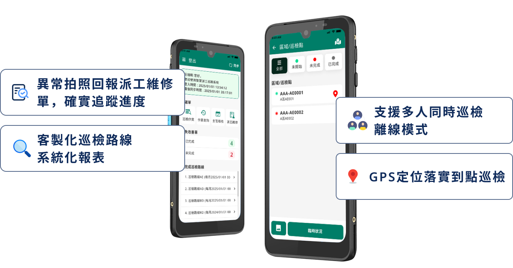
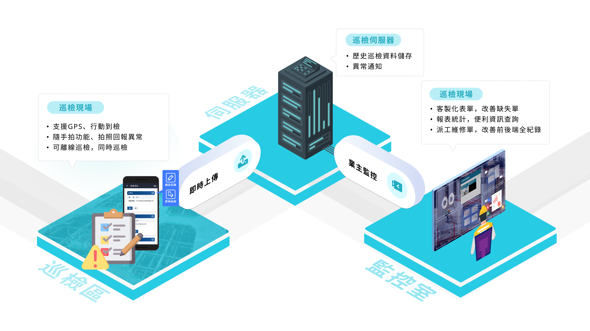
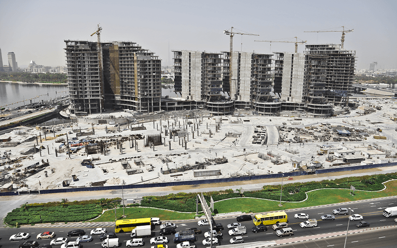

如何協助企業
How To Help Businesses
從巡檢到派工，一站式完成，讓問題零延誤。
巡檢派工系統將「巡檢紀錄」與「派工流程」無縫整合，打破傳統巡檢發現異常後，仍需透過電話、LINE或紙本單據轉交的低效率模式。異常一旦被發現，系統即可自動生成工單、帶入時間地點設備資訊，並即時分派至相關人員。處理進度全程透明可追蹤，責任歸屬清楚，避免遺漏或延誤。
透過數位化與行動化設計，巡檢人員可隨時拍照回報異常，管理者能即時派工，維修端快速回覆與更新，形成「發現－派工－追蹤－完成」的閉環管理，讓企業在日常運維上更有效率、更精準。

傳統巡檢派工的四大痛點

紀錄分散，難以追蹤
巡檢結果分散在紙本或不同系統，資訊零散，管理者難以全面掌握。派工依賴人工，效率低落
異常通報仍仰賴電話或訊息，容易延誤，無法即時啟動處理。現場問題無法即時回報
異常狀況延遲上傳，處理時效不足，導致風險擴大。缺乏歷史數據，難以改善
沒有完整數據可追蹤，無法進行分析，難以找到改善方向。情境模擬圖
Simulation diagram

設計理念
Design Concept
- 數位化流程：減少紙本文件，提升資料準確度。
- 即時性管理：異常狀況可隨拍隨傳，快速派工處理。
- 透明化追蹤：維修單與進度全程記錄，確保問題確實解決。
- 智慧化排程：可客製化巡檢路線，靈活符合各場域需求。
- 完整數據循環：自動生成系統化報表，利於分析與稽核。
- 行動化設計：支援多人同時巡檢、GPS 定位、到點驗證。
- 離線可用：即使在網路不穩環境，也能持續巡檢與回傳。
數位化流程
即時性管理
透明化追蹤
智慧化排程
完整數據管理
行動化設計
離線可用
特色
Feature

解決方法
Solution
系統核心功能
- 前端巡檢機作業模組
- 後端管理模組
- 查詢統計模組
- 報表模組
硬體需求
- 伺服器或雲端空間(訂閱制)
- 手持式行動裝置(Android或iOS)
- RFID/NFC Tag或QR Code
加購項目
0種
應用層面
Application
製造業
石化產業
倉儲物流

公共建設
交通運輸業
零售與餐飲連鎖業
家電與設備維修
服務
適用製造業、石化產業、倉儲物流、公共建設、交通運輸業、零售與餐飲連鎖業、家電與設備維修服務等場域。